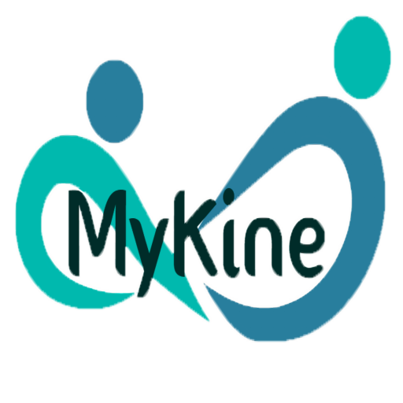

Nuestro proyecto ABP se llama MyKine, el cual está pensado para servir de apoyo a los fisioterapeutas autónomos proporcionando un servicio con el que puede mejorar el seguimiento con sus pacientes.
Habiendo hecho un amplio estudio de la competencia, podemos decir que nuestras ventajas diferenciales son el almacenamiento y gestión de los datos de los fisios y clientes, Chatbot conversacional e interactivo, seguimiento por parte del fisio a sus clientes, mediante informes y modelos interactuables 3D para la realización de los ejercicios.
En el proyecto estamos trabajando 4 personas, con la metodología ABP, que hemos comentado en el punto anterior.

En nuestro caso, nuestro ABP incluye las asignaturas siguientes:
Proyectos Multimedia
En esta asignatura realizamos toda la planificación y documentación del trabajo.
Sistemas de Difusión Multimedia
En esta asignatura estudiamos la competencia y trabajamos en el SEO de nuestro servicios y redes sociales.
E-Learning
En esta asignatura realizamos el ChatBot de la aplicación y los objetos de aprendizaje.
Técnicas Avanzadas de Gráficos
En esta asignatura trabajamos los modelos 3D que ofreceremos en nuestra aplicación y el motor gráfico.
Servicios Multimedia Basados en Internet
En esta asignatura aprendemos y trabajamos sobre nuestro servidor y la seguridad.
Servicios Multimedia Avanzados
En esta asignatura trabajamos el backend y frontend de nuestro servicio.
Negocio Multimedia
En esta asignatura se trabaja sobre el futuro del servicio y su posible puesto en el mercado.
Realidad Virtual
En esta asignatura se trabaja sobretodo en el entorno visual.